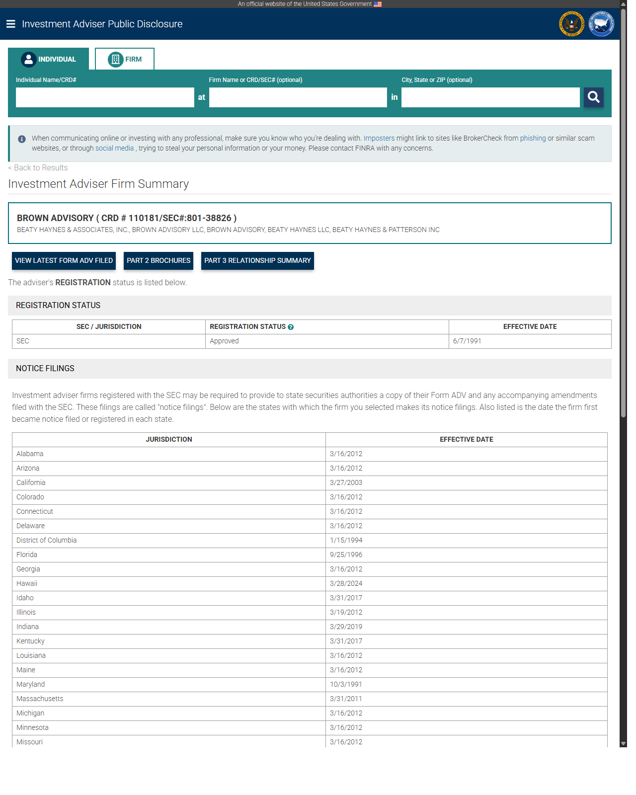
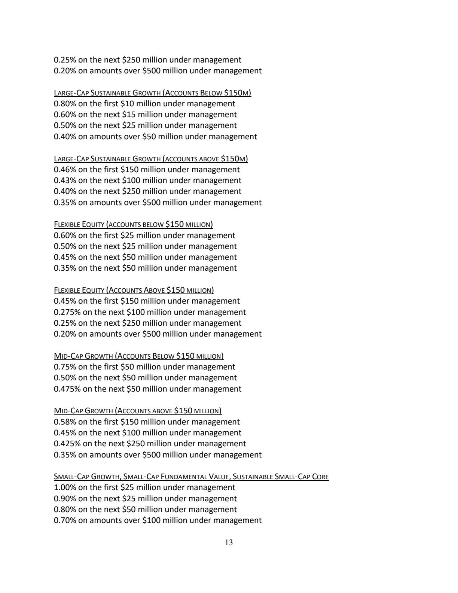
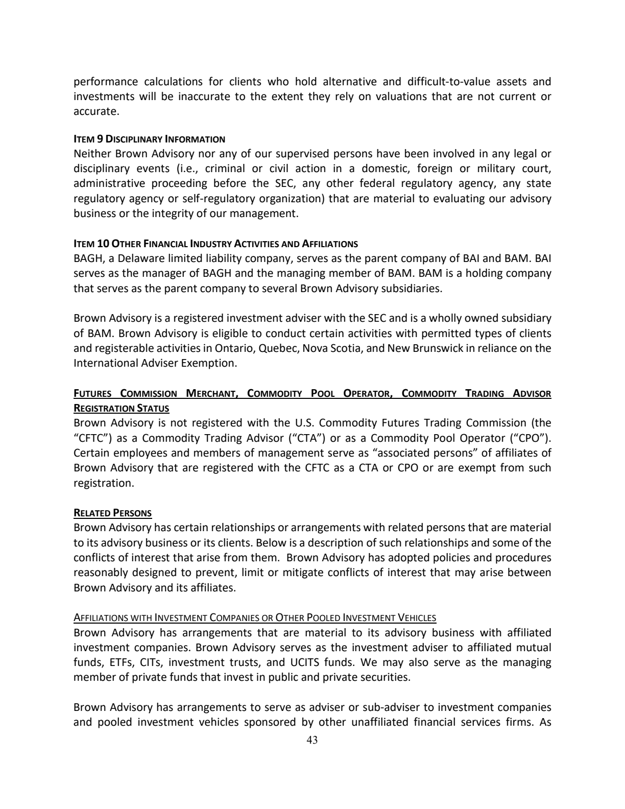
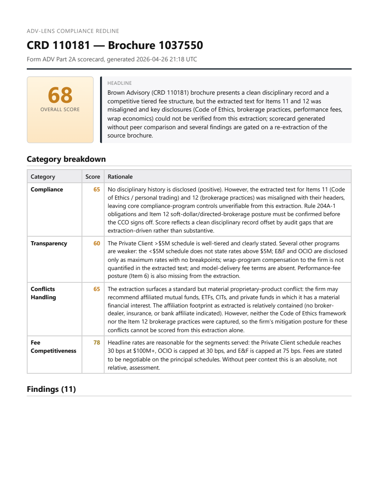

A printable desk reference for compliance officers, M&A diligence teams, and the engineers who run the system
Generated 2026-04-26 from main
ADV-Lens reads a registered investment adviser's regulatory disclosure brochure (the SEC Form ADV Part 2A — see the vocabulary section if any of that is unfamiliar) and produces a structured redline report that a Chief Compliance Officer can use to:
It is not legal advice. It is not an auto-publisher. It is not a substitute for CCO judgment. Every report leaves the system only after a human review gate writes a row to an audit table.
The intended day-to-day reader is a CCO at a mid-market RIA, an M&A diligence analyst evaluating a target adviser, or a wealth-management consulting team reviewing a client's filing posture.
Every piece of jargon that appears in this manual or in the system, in one sentence each. Skim, then come back when you hit a term you don't recognise.
| Acronym | Stands for | What it means in this system |
|---|---|---|
| ADV | (no expansion — the SEC's form name) | The registration form every SEC- or state-registered investment adviser files. Part 2A is the public disclosure brochure ADV-Lens reads. |
| RIA | Registered Investment Adviser | A firm that gives investment advice for compensation and is registered with the SEC or a state regulator. |
| CCO | Chief Compliance Officer | The named person at an RIA accountable for compliance with the Advisers Act. The intended human user of ADV-Lens. |
| CRD | Central Registration Depository | The unique numeric identifier the SEC and FINRA use for every adviser firm and individual. ADV-Lens keys everything off the firm's CRD. |
| IARD | Investment Adviser Registration Depository | The SEC system advisers file ADV through. The bulk download contains every active adviser's Part 1 record. |
| IAPD | Investment Adviser Public Disclosure | The public-facing SEC website that publishes every adviser's
brochures. ADV-Lens fetches PDFs from
files.adviserinfo.sec.gov. |
| AUM | Assets Under Management | Total client assets the firm manages. ADV-Lens uses an AUM band (0−1B, $1-5B, $5-50B, $50B+) as a peer-cohort filter. |
| SEC | Securities and Exchange Commission | Federal regulator. Registers and examines RIAs above $100M AUM (state regulators handle smaller). |
| FINRA | Financial Industry Regulatory Authority | Self-regulator for broker-dealers; runs BrokerCheck, the public lookup for adviser/broker disciplinary history. |
| HITL | Human-In-The-Loop | A pipeline pattern where machine output is gated on a human approval
step before being released. ADV-Lens's HumanReviewGate node
implements this. |
| RAG | Retrieval-Augmented Generation | Pulling relevant text from a knowledge store and feeding it to an LLM as context. ADV-Lens uses RAG to put peer-brochure excerpts in front of the redline writer. |
| BRCHR_VRSN_ID | Brochure Version ID | The SEC's per-version identifier for a specific filing of a brochure. The same firm can have multiple brochures (e.g., wrap fee program disclosure plus main brochure). |
| ERA | Exempt Reporting Adviser | A firm that meets a registration exemption but still files an abbreviated ADV. ADV-Lens does not currently process ERAs; it targets full Part 2A filings. |
| M&A | Mergers and Acquisitions | One target use case: an acquirer's diligence team reading a target adviser's ADV. |
| ADR | Architecture Decision Record | A short markdown file in docs/adr/ capturing one design
decision and its consequences. Eleven exist today. |
| Term | One-sentence definition |
|---|---|
| Fee schedule | The firm's published pricing — typically a tiered percentage of AUM, sometimes flat retainer or hourly, found in Item 5 of the ADV. |
| Conflict of interest | Any arrangement that gives the firm a financial incentive to act against a client's interest — affiliated funds, soft dollars, principal trading, etc. Disclosed in Items 10/11/12. |
| Disciplinary disclosure | Any past regulatory, criminal, or civil action involving the firm or its principals. Disclosed in Item 9. The CCO must keep this current. |
| Annual ADV amendment | Every adviser must file an updated ADV within 90 days of fiscal-year end. ADV-Lens sees the most recent filing on IAPD. |
| Wrap fee program | A bundled-fee program where one charge covers advice + execution + custody. Has its own brochure variant (Part 2A Appendix 1). |
| Custodian | The bank or broker-dealer that holds client assets. Disclosed in Item 12 when relevant. |
| Compliance exam | The SEC or state regulator's periodic on-site review of an adviser's books, records, and disclosures. ADV-Lens is designed to make exam prep cheaper, not to replace exam-readiness work. |
| Soft dollars | Research or services a custodian provides to the adviser in exchange for client trading commissions — disclosed in Item 12 and gated by the § 28(e) safe harbor. |
| Performance fee | Compensation tied to investment performance (e.g., 20% of gains). Permitted only with qualified clients; disclosed in Item 5. |
| Code of Ethics | A firm's written rules governing personal trading by access persons, required by Rule 204A-1, summarised in Item 11. |
If a term in this manual is not in the table above, it appears in the
parking-lot doc (docs/parking-lot.md) or the architecture
doc as a candidate for inclusion.
The system's input is a single PDF — the firm's most recent Part 2A brochure as published on IAPD. Brochures are typically 30–80 pages and follow a fixed structure of 18 numbered Items the SEC mandates.
| Item | Title | What's in it |
|---|---|---|
| 1 | Cover Page | Firm name, address, contact, brochure date. |
| 2 | Material Changes | Summary of changes since last annual amendment. |
| 3 | Table of Contents | Required structural element. |
| 4 | Advisory Business | Firm history, ownership, services, total AUM. |
| 5 | Fees and Compensation | Fee schedules, billing, third-party costs. Read by the Fee Extractor. |
| 6 | Performance-Based Fees | Disclosure if any. |
| 7 | Types of Clients | Individuals, pensions, funds, etc. |
| 8 | Methods of Analysis | Investment process. |
| 9 | Disciplinary Information | Regulatory, criminal, civil actions. Read by the Disciplinary Extractor. |
| 10 | Other Financial Industry Activities and Affiliations | Affiliated B/D, insurance, fund complex, bank. Read by the Conflicts Extractor (part 1 of 3). |
| 11 | Code of Ethics, Personal Trading, Participation in Client Transactions | Personal-trading policy, material conflicts. Read by the Conflicts Extractor (part 2 of 3). |
| 12 | Brokerage Practices | Soft dollars, directed brokerage, trade aggregation. Read by the Conflicts Extractor (part 3 of 3). |
| 13 | Review of Accounts | Account-review cadence and triggers. |
| 14 | Client Referrals & Other Compensation | Referral arrangements. |
| 15 | Custody | Custody arrangements and account-statement delivery. |
| 16 | Investment Discretion | Discretionary authority granted. |
| 17 | Voting Client Securities | Proxy-voting policy. |
| 18 | Financial Information | Pre-paid fees, financial condition, bankruptcy disclosures. |
ADV-Lens reads Items 5, 9, 10, 11, 12 with dedicated LLM extractors. The other 13 Items are segmented and stored but not currently scored — they're available for future extractors.
The three images below are from the live Brown Advisory run on 2026-04-26 — a deliberately neutral mid-size RIA, no recent compliance noise, multi-program brochure structure (the kind that exercises both the regex segmenter and the LLM rescue per ADR 0014).
The IAPD firm summary page — what a CRD resolves to. The "PART 2 BROCHURES" button links to the per-brochure PDF the system actually fetches. Brown Advisory: CRD 110181, SEC# 801-38826, registered 6/7/1991.

Item 5 — Fees and Compensation (page 13 of the
brochure). A multi-program tiered AUM fee schedule. Each program lists
breakpoints in plain English; the fee extractor's job is to recover
these into structured FeeSchedule / FeeTier
objects.

Item 9 — Disciplinary Information (page 43 of the
brochure). The canonical "no disciplinary history" disclosure pattern:
"Neither Brown Advisory nor any of our supervised persons have been
involved in any legal or disciplinary events...". The disciplinary
extractor's job is to recognise this as
has_disciplinary_history: false rather than hallucinating
events from the surrounding text.

The system's output is a RedlineReport Pydantic object,
serialised to JSON and (after the audit-trail bundle work — see § 9)
optionally rendered as a 1-page HTML/PDF for printing or emailing to the
CCO.
A RedlineReport contains:
brochure_crd and brochure_version_id —
exact provenance.scorecard — an overall score (0-100) plus four
mandatory category sub-scores, each 0-100 with a one-sentence rationale:
findings — between 4 and 12 individual flagged items,
each with:
F-001, F-002, …),category tag (e.g. compliance_program,
fee_structure, conflicts),info / low /
medium / high / critical),item_reference — the ADV Item number the finding
cites (null for cross-Item issues),summary (one sentence) and a detail (one
paragraph),sec_expectation_ref pointing at the specific Form ADV
instruction or Advisers Act rule the expectation derives from,peer_comparison populated when peer context
was available,recommendation — what the CCO should actually
do.peer_comparisons — list of cross-firm comparisons keyed
on extracted field, populated when peer context was available.extraction_warnings_seen — surfaces any
extraction_warnings that the upstream extractors emitted,
so the redline writer's interpretive judgment is auditable.notes — free-form notes from the redline writer about
caveats, upstream input quality, or limits on the assertions made.The schema lives in src/adv_lens/extractors/schemas.py
(RedlineReport, Scorecard,
ScoreCategory, Finding).
The first live end-to-end run against a real IAPD brochure:
Brown Advisory LLC (CRD 110181, BRCHR_VRSN_ID 1037550,
brochure filed 2026-03-31). Full artifact at docs/examples/sample-report.json
(19KB, redline + provenance metadata) and the full pipeline state at
docs/examples/sample-state.json (~290KB).
Honest commentary on this sample. The overall_score is 68. The brochure has a non-canonical multi-program structure — only Items 2/3/4/9/15/16 have ALL-CAPS narrative headers; Items 5/10/11/12 lack standalone section headers because their content is bundled into per-program subsections. The pipeline handled this in two stages:
- The regex
HeuristicSegmentercaught Items 2/3/4/9/15/16 cleanly (Item 9 = no disciplinary disclosures, a score-positive signal) but produced 0–144-char fragments for Items 5/10/11/12.- The ADR 0014 LLM rescue kicked in: Haiku 4.5 located the real spans for the four missing Items in one prompt round-trip, producing 3,452 / 3,813 / 16,544 / 18,120-char bodies for Items 10 / 11 / 5 / 12 respectively. Backend tag on the resulting
SegmentedBrochureisheuristic+llm_fallback, with a warning recording exactly which Items were rescued.Qdrant remained offline for this run, so
retrieve_peersdegraded gracefully (emptypeer_context) and the redline writer noted the absence of peer benchmarking in its headline.Of the 11 findings, 3 are high-severity (re-extraction of misaligned Items 11/12 spans recommended), 4 medium, 2 low, 2 info. F-001 is a positive info-severity finding documenting that the Private Client
$5M schedule's 100→30 bp tiered structure is industry-standard.
The portfolio claim is now demonstrable end-to-end: "we extract Items 5/9/10/11/12 from canonical and multi-program brochures alike, with a deterministic-first / LLM-rescue-as-fallback architecture, and surface any remaining gaps as findings rather than hiding them." Full diagnostic in ADR 0014; the SEC URL/UA migration story patched in this same session is in ADR 0015.
{
"meta": {
"crd": "110181",
"brochure_version_id": "1037550",
"trace_id": "brown-advisory-rescued",
"review_status": "pending_review",
"segmenter_backend": "heuristic+llm_fallback"
},
"redline": {
"scorecard": {
"overall_score": 68,
"headline": "Brown Advisory (CRD 110181) brochure presents a clean disciplinary record and a competitive tiered fee structure, but the extracted text for Items 11 and 12 was misaligned and key disclosures (Code of Ethics, brokerage practices, performance fees, wrap economics) could not be verified from this extraction; scorecard generated without peer comparison and several findings are gated on a re-extraction of the source brochure.",
"categories": [
{"name": "compliance", "score": 65, "rationale": "No disciplinary history disclosed (positive). Extracted text for Items 11 (Code of Ethics) and 12 (brokerage) was misaligned with their headers, leaving core compliance-program controls unverifiable from this extraction."},
{"name": "transparency", "score": 60, "rationale": "Private Client >$5M schedule is well-tiered and clearly stated. Other programs are weaker: <$5M schedule does not state rates above $5M; E&F and OCIO are disclosed only as maximum rates with no breakpoints; wrap-program compensation to the firm is not quantified."},
{"name": "conflicts_handling", "score": 65, "rationale": "Standard but material proprietary-product conflict surfaced (firm may recommend affiliated funds/CITs in which it has a financial interest). No B/D, insurance, or banking affiliation footprint visible in the extraction."},
{"name": "fee_competitiveness", "score": 78, "rationale": "Headline rates are reasonable: Private Client reaches 30 bps at $100M+, OCIO is capped at 30 bps, E&F is capped at 75 bps. Fees stated to be negotiable. Without peer context this is an absolute, not relative, assessment."}
]
},
"findings": [
{
"id": "F-001",
"category": "fee_structure",
"severity": "info",
"item_reference": 5,
"summary": "Tiered AUM fee schedule for Private Client Portfolios >$5M is competitive and uses standard breakpoints.",
"detail": "The Private Client Portfolios >$5M schedule begins at 100 bps on the first $5M and steps down through 75/50/35/30 bps, with a top breakpoint at $100M. Billing is quarterly and fees are stated to be negotiable. Structure appears consistent with industry norms for high-net-worth discretionary management.",
"sec_expectation_ref": "Form ADV Part 2A Instructions, Item 5.A (fee schedule disclosure)",
"peer_comparison": null,
"recommendation": "No action required. Document the schedule in the firm's fee-comparison file for next annual review."
},
{
"id": "F-002",
"category": "fee_structure",
"severity": "low",
"item_reference": 5,
"summary": "Private Client <$5M schedule is ambiguous: only the first $5M is tiered; no rate stated for assets above $5M.",
"detail": "The <$5M schedule shows 125 bps on the first $3M and 100 bps from $3M-$5M, but does not state a rate for assets above $5M. The extractor's working hypothesis is that this schedule applies only when the $5M minimum is waived. The brochure language as extracted may leave a sub-$5M client unclear about how growth above $5M would be billed.",
"sec_expectation_ref": "Form ADV Part 2A Instructions, Item 5.A (plain-English fee description)",
"peer_comparison": null,
"recommendation": "Review the source brochure text to confirm whether the schedule rolls into the >$5M grid once a sub-minimum account crosses $5M. If ambiguous, escalate to disclosure counsel for a clarifying edit at the next amendment."
}
]
}
}The full report has 11 findings (3 high, 4 medium, 2 low, 2 info).
The 3 high-severity findings recommend re-extracting Items 11 and 12
where the LLM rescue produced misaligned spans the redline writer
detected in its content review. Read docs/examples/sample-report.json
for the complete artifact including provenance
(brochure_sha256, report_hash) used by the
audit-trail mechanism.
These thresholds are advisory, not regulatory. Your compliance counsel sets the actual remediation bar.
Each finding cites the ADV Item it relates to and has a severity. The severity scale is calibrated to what would change at exam, not to what would change a hiring decision:
A finding without a numeric Item reference signals a cross-Item issue (e.g., contradiction between Item 5 fees and Item 12 brokerage).
┌────────────────────────────────────────────────────────┐
│ │
CRD │ ┌──────────────┐ ┌───────────────────┐ │
─────┼────►│ fetch_ │──►│ segment_brochure │ │
│ │ brochure │ │ (HeuristicSeg) │ │
│ └──────────────┘ └─────────┬─────────┘ │
│ │ │
│ ┌───────────────────┼───────────────────┐ │
│ ▼ ▼ ▼ │
│ ┌──────────────┐ ┌──────────────────┐ ┌────────────┐
│ │ extract_fee │ │ extract_ │ │ extract_ │
│ │ (Sonnet 4.6) │ │ disciplinary │ │ conflicts │
│ │ │ │ (Haiku 4.5) │ │ (Sonnet 4.6│
│ └───────┬──────┘ └─────────┬────────┘ └─────┬──────┘
│ │ │ │ │
│ └────────┬──────────┴─────────────────┘ │
│ ▼ │
│ ┌─────────────────────────────────┐ │
│ │ retrieve_peers │ │
│ │ (Qdrant hybrid: dense+BM25+RRF │ │
│ │ + cross-encoder rerank) │ │
│ └────────────────┬────────────────┘ │
│ ▼ │
│ ┌──────────────────────┐ │
│ │ write_redline │ │
│ │ (Opus 4.7) │ │
│ └──────────┬───────────┘ │
│ ▼ │
│ ┌──────────────────────┐ │
│ │ hitl_gate │ → audit row │
│ │ (marker-style) │ on /report/decision
│ └──────────────────────┘ │
│ │
└─────────────────────────────────────────────────────────┘
↓
RedlineReport JSON
(+ audit trail in Postgres)A live Mermaid version of the same diagram is in
docs/architecture.md (§ Pipeline) — GitHub renders it
inline.
For each arrow in the diagram, this table names the Extract, the Transform, and the Load so a CCO can trace any field in the final scorecard back to a source artifact, a transform, and an audit row.
| Hop | Extract | Transform | Load |
|---|---|---|---|
| CRD → IAPD search | HTTPS GET to api.adviserinfo.sec.gov (rate-limited 5
rps) |
JSON → BrochureRef Pydantic |
data/brochures/<CRD>/index.json |
| IAPD search → PDF | HTTPS GET to files.adviserinfo.sec.gov/...pdf |
bytes → SHA-256 + cache key | data/brochures/<CRD>/<BRCHR_VRSN_ID>.pdf
(idempotent) |
| PDF → text | pypdf page iteration |
text concat with page boundaries | in-memory str (passed to segmenter) |
| text → 18 sections | HeuristicSegmenter (regex on Item 1 / Item 2 / …
headings) |
dict[ItemNumber, SectionBody] →
SegmentedBrochure Pydantic |
in-memory; persisted in state.segmented_brochure |
| Item 5 → fee extraction | LLM call (Sonnet 4.6 via Instructor) | structured JSON → FeeExtraction Pydantic |
one row in llm_calls (input/output/tokens/cost), one
field in state.extractions |
| Item 9 → disciplinary extraction | LLM call (Haiku 4.5 via Instructor) | structured JSON → DisciplinaryExtraction Pydantic |
one row in llm_calls, one field in
state.extractions |
| Items 10/11/12 → conflicts extraction | LLM call (Sonnet 4.6 via Instructor) | structured JSON → ConflictsExtraction Pydantic |
one row in llm_calls, one field in
state.extractions |
| extractions → peer hits | Qdrant query per Item (5/9/10/11/12) with AUM-band filter, exclude self-CRD | dense bge-small-en-v1.5 + sparse hashed BM25 → RRF
fusion → cross-encoder rerank (ms-marco-MiniLM-L-6-v2) |
state.peer_context: list[dict] (PeerHit dumps) |
| extractions + peers → redline | LLM call (Opus 4.7 via Instructor) | structured JSON → RedlineReport Pydantic + structural
validator |
one row in llm_calls, state.redline |
| redline → review marker | compute_report_hash(redline) SHA-256 |
sets state.review_status="pending_review",
state.report_hash |
pipeline_runs.result (full state JSON) |
CCO POST /report/decision |
HTTP request body | HumanReviewDecision Pydantic |
one row in human_reviews (decision, reviewer,
rationale, report_hash) |
Every LLM call additionally emits a Langfuse trace span when Langfuse
is configured (one trace per trace_id, one span per
node).
See docs/architecture.md § Pipeline (current code) for
the full, code-citing description of each node. The short version:
BRCHR_VRSN_ID), fetches the PDF with a content-addressed
cache, populates SHA-256 + cache-status flags on the state.state.errors rather than raising. This means
a brochure missing Item 9 still flows through the rest of the
pipeline.merge_extractions reducer (ADR 0006). Each returns only its
own field; the reducer composes them.review_status="pending_review"
report_hash), not a true LangGraph
interrupt_before. ADR 0010 documents why.| Node | Model | Why |
|---|---|---|
fetch_brochure |
(no LLM) | Pure I/O |
segment_brochure |
(no LLM) | Regex |
extract_fee |
Sonnet 4.6 | Numeric tables + categorical fields; benefits from Sonnet's structured-output discipline |
extract_disciplinary |
Haiku 4.5 | Disciplinary disclosures are short and largely categorical; Haiku is fast and cheap |
extract_conflicts |
Sonnet 4.6 | Three concatenated Items, lots of conditional fields; Sonnet handles the longer context |
retrieve_peers |
(no LLM) | Vector + lexical search; cross-encoder rerank is a bge model |
write_redline |
Opus 4.7 | Synthesises 4 inputs into a defensible scorecard + findings; one call per run is the cost cap |
Per-node assignments are environment-overridable via
MODEL_* env vars (see § 10.3).
uv (see pyproject.toml for
exact deps)ANTHROPIC_API_KEY in .env for any
extraction or redline runLANGFUSE_* keys after first compose-up, for
trace visibilitycp .env.example .env
# edit .env: paste ANTHROPIC_API_KEY, leave LANGFUSE_* blank for now
docker compose up -d
# visit http://localhost:3000 to provision Langfuse, paste back the
# LANGFUSE_PUBLIC_KEY / LANGFUSE_SECRET_KEY
uv run python -m adv_lens.app.main # or: docker compose up appHealth check: GET http://localhost:8000/healthz
# Fetch + segment only (no LLM cost)
uv run python -m adv_lens.app.graph.cli 108000 --no-llm
# Full pipeline (extractors + redline + HITL marker)
uv run python -m adv_lens.app.graph.cli 108000
# Pin a specific brochure version
uv run python -m adv_lens.app.graph.cli 108000 --brochure-version 987654CLI prints the final ADVState as JSON. Pipe to
jq for inspection.
# Submit
curl -X POST http://localhost:8000/pipeline/run \
-H 'content-type: application/json' \
-d '{"crd": "108000"}'
# → 202 {"trace_id": "advlens-abc123", "status": "queued",
# "status_url": "/pipeline/run/advlens-abc123"}
# Poll
curl http://localhost:8000/pipeline/run/advlens-abc123
# → 200 {"trace_id": ..., "status": "running" | "complete" | "failed",
# "result": {... full ADVState when complete ...}}The status walks queued → running → complete | failed.
Polling cadence: 5-15 seconds is plenty; a typical end-to-end run is
30-90 s on a real brochure.
When result.review_status == "pending_review", the CCO
acts:
curl -X POST http://localhost:8000/report/decision \
-H 'content-type: application/json' \
-d '{
"trace_id": "advlens-abc123",
"report_hash": "<echoed from the pipeline result>",
"brochure_crd": "108000",
"decision": "approved",
"reviewer": "jane.cco@firm.example",
"rationale": "Reviewed all medium findings; concur with the action items in F-001 and F-002."
}'
# → 201 + DecisionResponse including the audit row id
# Read the decision history for a run:
curl http://localhost:8000/report/decision/advlens-abc123
# → list of decisions oldest-first; re-posts deliberately create new rowsDecision options: approved, rejected,
revise_requested.
Three Postgres tables, queryable at any time:
llm_calls — one row per LLM invocation. Includes input,
output, model ID, intended temperature, token counts, USD cost, trace
ID, node name, brochure CRD, timestamp.human_reviews — one row per CCO decision. Includes
decision, reviewer, rationale, report_hash, timestamp.pipeline_runs — one row per pipeline invocation.
Includes status, started/completed timestamps, full final state JSON,
error.A typical audit query: "show me every LLM call for trace X with model and cost":
SELECT node, model, prompt_tokens, completion_tokens, cost_usd, created_at
FROM llm_calls WHERE trace_id = 'advlens-abc123' ORDER BY created_at;NOT BUILT YET — single-command audit-trail bundle.
Today the audit lives across three tables and a JSON column. A
GET /report/audit/{trace_id}endpoint that returns a single ZIP containing the cached input PDF, the per-Item extraction JSONs, the RedlineReport, allllm_callsrows, and allhuman_reviewsrows would close the "give me the exam-defensible bundle" need in one request. Target plan: Week-5 polish; Jinja+ZIP, ~3 hours.
Is: an analyst aid for CCOs and M&A diligence teams reading public SEC filings. Structured extraction + peer benchmarking + redline.
Isn't:
Every report passes through a human review gate before it leaves the system.
The hitl_gate node runs at the end of every pipeline. It
does not publish the report. It marks the report as
pending_review and computes a report_hash
(SHA-256 of the canonical RedlineReport JSON). The CCO acts via
POST /report/decision, which writes a row to
human_reviews keyed on the hash.
A re-run of the pipeline against the same CRD produces a new
trace_id but a report_hash that may or may not
match the prior approval. This is intentional — approvals are pinned to
the exact bytes the CCO read, not to a moving target.
Every LLM call and every human decision lands in Postgres with a trace ID that joins back to the pipeline run. The audit posture is designed to answer: "Show me how this finding was produced and who signed off on it." See § 6.6 for query examples.
ADV-Lens reads exclusively public SEC filings. No client PII, no
gated scraping. The companion docs/compliance.md enumerates
the specific SEC and FINRA rules the system engages with.
NOT BUILT YET — full compliance doc.
docs/compliance.mdis currently a placeholder. Target plan: Week-5 polish pass covers: SEC Marketing Rule 206(4)-1 implications (none, but defensible), Advisers Act recordkeeping rule 204-2, the Form ADV instructions ADV-Lens uses as a scoring rubric, and the exam-defensibility argument for the audit posture. Co-lands with the README final pass and this manual's revision.
data/brochures/<CRD>/<BRCHR_VRSN_ID>.pdf.
Public SEC filings; no expiry policy needed.pipeline_runs.result. 90-day retention is the planned
default; today operators clean up manually.llm_calls retain
everything indefinitely for audit. Cost is tracked per row.GET /healthz returns 200.pipeline_runs row stuck in running
longer than 10 minutes gets reaped by the stuck-row reaper (see §
8.3).Langfuse trace emission is plumbed and tested in code: every LLM call
in LLMClient.extract emits one Langfuse generation span,
and all spans for one pipeline invocation roll up under a deterministic
trace ID (Langfuse.create_trace_id(seed=trace_id)). The
wire is no-op when Langfuse isn't configured. To turn it on:
docker-compose.yml):
docker compose up -d langfuse-web langfuse-worker langfuse-db.env:
LANGFUSE_PUBLIC_KEY=pk-lf-...
LANGFUSE_SECRET_KEY=sk-lf-...
LANGFUSE_HOST=http://localhost:3000trace_id is
available via
adv_lens.app.observability.get_trace_url(trace_id) and
printed in logs/ when configured.Coverage today: one Langfuse generation span per LLM call (fee / disciplinary / conflicts extractors, segmenter LLM rescue, redline writer), each with model ID, input/output tokens, USD cost, the brochure CRD, and the originating pipeline trace ID. Roll-up trace contains every span for one pipeline invocation in time order.
README trace links populate after the first traced run. The README's "3 example traces" placeholders are populated by hand from the Langfuse UI after the self-host has at least one CCO-approved brochure run end-to-end.
uv run python -m eval.runnereval/results/). A drop of more than 0.05 mean F1 in any
section warrants a prompt or schema diff.Process restarts (deploys, OOMs, network partitions) leave any
in-flight pipeline runs stuck in status="running". The
reaper sweeps them:
# Dry run — show candidates without mutating
uv run python -m adv_lens.app.jobs.reaper --dry-run --verbose
# Actually mark stuck rows as failed
uv run python -m adv_lens.app.jobs.reaper --verboseWire into cron / a Kubernetes CronJob at whatever cadence matches
your deployment's restart frequency. Default threshold is 10 minutes;
tune via PIPELINE_RUN_REAP_THRESHOLD_MINUTES in
.env.
Every LLM call writes its cost estimate in USD to
llm_calls.cost_usd. A typical full pipeline run costs 0.50−1.50 (one Opus call dominates). Per-day
budget alarm:
SELECT DATE(created_at) AS day, SUM(cost_usd) AS daily_usd
FROM llm_calls
WHERE created_at > NOW() - INTERVAL '7 days'
GROUP BY day ORDER BY day;NOT BUILT YET — CI eval-regression gate.
Today the eval harness runs locally and writes
eval/results/<UTC>/report.{json,md}. No CI check enforces a regression bar yet. Target plan: Week-4 — GitHub Actions job that runs the eval on every PR (against an Anthropic-key secret), compares the resultingmean_scoreper section to the latest committed baseline, and blocks the PR if any section drops more than 0.05. Pairs with the LLM-as-judge dual-judge pattern (ADR 0009).
The system is feature-complete on the pipeline + extractor + audit axes (Weeks 1-3). The remaining work is rigour + presentation + operational polish (Weeks 4-6). In rough priority order:
Segmenter robustness against multi-program /
bundled-Items brochures (see ADR 0014). The
HeuristicSegmenter regex looks for line-anchored "Item N"
headers (case-insensitive, common punctuation variants). It works
cleanly on the textbook brochure structure but breaks on brochures that
bundle Items together — for example, where the
fee-disclosure narrative for Items 5/10/11/12 lives inside per-program
subsections like "Brown Advisory Wrap Program — Fees and Compensation"
rather than a standalone "Item 5" header. The Brown Advisory live run (§
4.2) surfaced this honestly: Items 2/3/4/9/15/16 parsed cleanly, Items
5/10/11/12 did not. Target plan: add an LLM fallback
(Haiku 4.5, one call per brochure) that locates Item-section spans when
the regex finds <2K-char bodies for any of Items 5/9/10/11/12.
Triggered only on the difficult subset; regex stays primary. Full design
+ diagnostic in ADR 0014.
LLM-as-judge for redline scoring (ADR 0009). Today the redline is scored only structurally (4-12 findings, valid scorecard categories, unique IDs, severity not pathological). A second LLM judge reading the redline against the brochure would give a content-quality score. Plan: dual-judge with cross-checking to control for judge drift.
Golden set scaling: 19 → 65 fixtures. Spread across all three extractor sections; mix synthetic-clean and realism-style prose. The 19 fixtures shipped today validate the extractors structurally; 65 gives stable per-section F1 numbers that survive run-to-run noise.
CI eval-regression gate (see § 8.5).
Multi-run averaging. Without
temperature=0 (deprecated by Anthropic on Opus 4.7, with
Sonnet/Haiku to follow), single-shot F1 has run-to-run variance up to
0.15 on individual fixtures. Eval should run each fixture N=3 and report
median + spread.
adv_lens.redline.cli
renders any RedlineReport JSON (or the trimmed
sample-report wrapper) to a self-contained HTML artifact and optional
PDF via headless Chrome. Score gauge, severity-coloured finding cards,
category breakdown table, footer with provenance (CRD, version, brochure
SHA-256, trace, report hash). Live sample at docs/examples/sample-report.html
and docs/examples/sample-report.pdf.
Page-1 preview: 
docs/examples/sample-report.json that updates § 4.2 in this
manual.BRCHR_VRSN_ID changes on IAPD, fire the
pipeline against the new brochure, diff the resulting RedlineReport
against the prior approved one, and route the change summary to the CCO.
Reuses every component of this system.eval/results/*.json, F1 per section over commit history.
GitHub Pages publish.| Method | Path | Purpose |
|---|---|---|
| GET | /healthz |
Liveness |
| GET | /brochure/{crd} |
List current Part 2A brochures for a CRD |
| POST | /pipeline/run |
Submit a pipeline run; returns 202 + status URL |
| GET | /pipeline/run/{trace_id} |
Poll pipeline state |
| POST | /report/decision |
Write a CCO decision row |
| GET | /report/decision/{trace_id} |
Read decision history |
| Command | Purpose |
|---|---|
python -m adv_lens.ingestion.cli fetch-brochure <CRD> |
Fetch one brochure |
python -m adv_lens.ingestion.cli search <query> |
IAPD search |
python -m adv_lens.segmenter.cli <PDF> |
Dump Item 1-18 sections |
python -m adv_lens.app.graph.cli <CRD> |
Run the full pipeline synchronously |
python -m adv_lens.app.main |
Start the FastAPI app |
python -m adv_lens.app.jobs.reaper [--dry-run] |
Sweep stuck pipeline_runs rows |
python -m adv_lens.redline.cli <report.json> [--pdf] |
Render a saved RedlineReport to HTML / PDF |
python -m eval.runner [<section>] |
Run the eval harness |
The full list is in .env.example. Highlights:
| Var | Default | Purpose |
|---|---|---|
ANTHROPIC_API_KEY |
— | Required for any LLM-backed run |
MODEL_FEE_EXTRACTOR |
claude-sonnet-4-6 |
Per-node override |
MODEL_DISCIPLINARY |
claude-haiku-4-5-20251001 |
Per-node override |
MODEL_CONFLICTS |
claude-sonnet-4-6 |
Per-node override |
MODEL_REDLINE |
claude-opus-4-7 |
Per-node override |
POSTGRES_DSN |
local docker-compose | Audit + pipeline_runs |
QDRANT_URL |
http://localhost:6333 |
Peer corpus |
LANGFUSE_* |
(blank until provisioned) | Trace export |
ENABLE_HITL |
true |
When false, gate auto-approves (dev / batch mode) |
PIPELINE_RUN_REAP_THRESHOLD_MINUTES |
10 | Stuck-row reaper cutoff |
src/adv_lens/
app/
main.py # FastAPI app
graph/
pipeline.py # LangGraph topology
state.py # ADVState
nodes/ # Per-node implementations
jobs/
models.py # PipelineRun
runner.py # async background runner
reaper.py # stuck-row sweeper
storage/
audit.py # HumanReview, llm_calls
db.py # session + engine
extractors/
fee.py # Fee extractor
disciplinary.py # Disciplinary extractor
conflicts.py # Conflicts extractor
redline.py # Redline writer
schemas.py # All Pydantic models
segmenter/ # Item 1-18 segmenter
ingestion/ # IAPD + IARD clients
retrieval/ # Qdrant + hybrid search
llm/ # LLMClient + audit sink + cost
observability/ # Langfuse callbacks
eval/
runner.py # Eval entry point
scorers/ # Per-section scorers
fixtures/ # Golden set (19 today, 65 target)
results/<UTC>/ # Per-run reports
docs/
architecture.md # Pipeline + ADR index
compliance.md # (placeholder)
user-manual.md # This document
parking-lot.md # Captured ideas
adr/ # 11 ADRs
tests/ # 221 pytest tests| # | Title |
|---|---|
| 0001 | Stack choices |
| 0002 | Data sources (IAPD/IARD) |
| 0003 | Segmenter strategy |
| 0004 | Peer corpus indexing |
| 0005 | Extractor pattern |
| 0006 | Parallel state composition |
| 0007 | Hybrid retrieval (revises 0004 § 5) |
| 0008 | Redline output format |
| 0009 | LLM-as-judge for redline scoring (pending) |
| 0010 | HITL gate (marker-style) |
| 0011 | Async pipeline worker |
| 0012 | On-prem branch scope (pending) |
| 0013 | Peer auto-discovery from IARD (pending) |
Each ADR follows the Context / Decision / Consequences format and is
one file under docs/adr/.
End of manual. Generated 2026-04-26 from main. The
live source is docs/user-manual.md; this PDF is regenerated
by docs/build-pdf.sh.